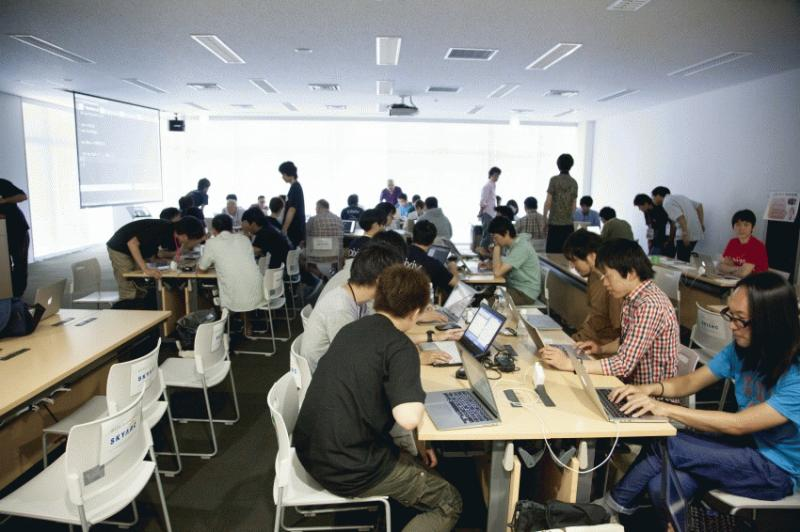
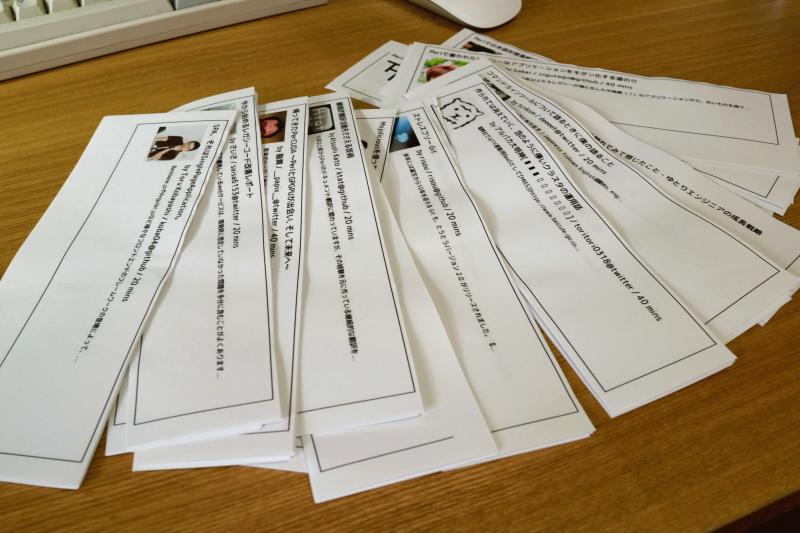
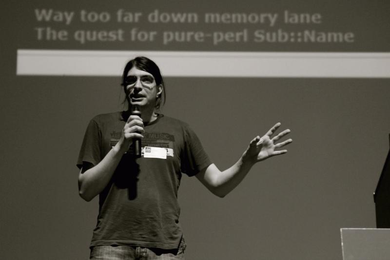

( This article in Japanese )
こんにちは。YAPC実行委員長のわだです。好評によりチケット完売。皆様ありがとうございました！
さて本日は Perl入学式 in YAPC::Asia 2014 というイベントの紹介です。今回のYAPC会期中の8月30日(土) 13時から「多目的教室3」という会場で約150分間行なわれるPerl初心者向けのワークショップが「Perl入学式 in YAPC::Asia 2014」となります。下の写真は去年の様子です。

Perl入学式はYAPCに限らず東京、大阪、福岡にてそれぞれ年12回 (補講も含む) 開催されている人気イベントです。それが、 YAPC::Asia で行なわれるということで楽しみですね。今回の主催者であるパピックス氏から以下のようなコメントをいただきました。
年に一度のお祭りということで, いつもとは違ったカリキュラムを提供したいと思っています
なお、参加には登録が必要等、注意事項があるので以下の参加応募ページを希望者の方は必ずご参照下さい。
Date 2014.07.31 By yusukebe

Andy Delcambre who works at GitHub will come to this YAPC::Asia. He will talk about the backend of github.com.
His talk abstract is blew:
こんにちは、ゆーすけべーことYAPC実行委員長のわだです。皆さんご存知のgitベースなソーシャルコーディングサービス「 GitHub 」僕も常日頃からお世話になっているのですが、そんなGitHubから「 中の人 」がやってきます！一応いただいたプロフィールによると、スノボとバックパッキングと旅行とロッククライミングと料理と美味しいご飯を食べるのとバイクに乗るのが趣味でサンフランシスコに居る Andy Delcambre さん（ GitHub: adelcambre）です。
Changing the tires on a moving car: a case study in upgrading legacy architecture という題名で、ザックリとした僕の把握によると「サービスを止めずにバックエンドをつくりかえるお話」が聞けるそうです。日々進化するGitHubの裏側がどうなっているか聞けることでしょう！楽しみです。
ちなみに... 5件ある海外スピーカーのトークには 英語から日本語への同時通訳 をつける予定です！！
Date 2014.07.25 By yusukebe
海外スピーカーの一人である「Yves Orton 氏」が急遽来日出来なくなりました。そのため1日目 (8月29日土) の15時からのトークスケジュールを以下のように変更いたしましたので連絡です。
どの発表を見ようかな〜と今から待ちきれない方は、再度、タイムスケジュールをご確認下さい！
Date 2014.07.22 By yusukebe
On the tomorrow ( Jul 23/JST ), we stop selling the tickets! If you want to join this YAPC::Asia, buy your ticket right now.
こんにちは。YAPC::Asia実行委員長のわだです。チケットの売れ行きがおかげ様で とても 良いです。ありがとうございます。その結果、会場のキャパシティなどの都合も考慮して、予定よりも早く 明日 (7月22日水曜日) の昼間をメドにチケットを完売にします 。なお、当日券の販売はいたしませんし、追加販売も行う計画はありません。つまり...
YAPC::Asia 行きたい！って人は今すぐチケットをご購入下さい！
今回売り切れにするチケットは個人スポンサーや学生チケット全てを含みます。ちなみに今回のYAPC::Asiaは
- 個性的なトークが盛りだくさん
- 交流スペースもあるよ
- 予定調和なゲリライベントも計画中
- 5人の海外スピーカーに同時通訳をつけるぜ
- 無限？コーヒーもあるよ
- 他にもあんなことやこんなことも...
と、スローガン通り楽しみ方色々です。この機会にYAPC::Asia Tokyo 2014へお越しくださいね
Date 2014.07.22 By yusukebe
7月17日15時46分追記
販売を再開いたしました！
ただいま、YAPC::Asiaのチケット購入サイトで「チケットが売り切れている」状態が続き、ご購入が出来なくなっている状況です。
チケット自体、残り枚数はわずかですが、もう少し販売出来る枚数は残っています！この件につきまして外部のチケット購入サイト側で問題がある可能性が高いため、問い合わせ中です。ご購入希望の方は申し訳ありませんが、もうしばらくお待ち下さい。
Date 2014.07.17 By yusukebe
Talk schedule is now available! You can see it below:
こんばんわ。YAPC::Asia実行委員長のわだです。100件程度と多数ご応募いただいたトークのプロポーサル。
選出が終わり先ほど採択されたトークとそのスケジュールを発表しました。
万が一の都合上、トークの順番が変更になる場合もありますが、基本これにて決定です。
皆様ご応募ありがとうございました。
多言語トークばかり？と騒がれていた時期もありましたが、YAPCだけにPerl成分多め、インフラ要素がその次、またモバイルとの連携話もいくつかあるのが今年の特徴ですかね！
さて、今年は数点の事情により非常に多くのトークをリジェクトしなくてはいけなくなりました。
簡潔にその理由を説明しますと、
- トークの発表にも使えるイベントホールと呼ばれる会場をあえて交流の場として活用しようと前から考えていた
- トークの応募は蓋を開けてみたらかなり多い数をいただいた
- 海外からのスピーカーも多数参加していただけるとのことで同時通訳をつけて発表してもらいたかった
- よって採択倍率2倍近く
という具合です。

その中で「特に」以下のようなことを考慮してトークを選出しました。
- トークタイトルや概要がしっかり書いてあるか？
- そこから会場が盛り上がっているのを想像出来るか？
- テーマが斬新か？
で、その結果が今回公開したタイムテーブルです。
ただ... 僕自身のBlog記事で
まだ見ぬ君のトークが観たい
と初めてYAPCでトークする人を優先するようなことを書いておきながら中には有望だが採択されていないトークもある件。
自然言語処理とメールに関するトークを一切採択しなかったこと。
僕、この前、知らない人から「トーク応援してます」って言われて、採択されなかったらどうしよう...
という人のトークをリジェクトした件。諸々「すいません」という心情ですが、何卒ご了承下さい。
とはいえ！リジェクトされたトーク一覧を見ても面白そうなものばかりなので、
公式にやるか？はともかくリジェクトコン的な何かを開催する予定ですのでそちらもよろしくお願い致します。
そして、改めて採択させてもらった方々。よろしくお願いします！チケットもそろそろ販売を締め切ると思いますので、まだ、の方は是非
Date 2014.07.16 By yusukebe
Sawyer X who is a main maintainer of Dancer2 will talk on this YAPC::Asia! And sad news is that Larry Wall will not be able to come this YAPC, because of his surgeries.
こんにちは、ゆーすけべーことYAPC実行委員長のわだです。以前からトーク応募一覧ページに彼のトークが登録されていたので、既にご存知な方もいるかと思いますが、 Sawyer X ( PAUSE ID xsawyerx ) がYAPC::Asiaのために来日いたします！
個人的にPerlを使った海外のWeb開発事情を知りたいなぁ〜なんて思っていて、そういえばWeb Application Framework=WAFの一つ Dancer ってどーなってるんだろう！と彼に声をかけてみた次第です。そう彼は現在、 Dancer2 のメンテナであります。WAFとしてAmon2やMojoliciiousが好まれる昨今の日本ですが、この機会にもう一つの選択肢として Dancer に目を向けるのも良いのではないでしょうか。また、彼はオンライン宿泊予約サイト世界最大手の「Booking.com」に務めているので、Perl製であるそのサイトの裏側の話が聞けちゃいそうです。
そして、残念なお知らせを一つ。当初ゲストとして予定していた「Larry Wall」氏が手術の影響で来日出来なくなりました。楽しみにしていた方々、大変申し訳ありません。そのうちに、彼の元気な姿を見ることが出来るでしょう！
Date 2014.07.14 By yusukebe
One of the guest speakers is Peter Rabbitson who is the main maintainer of DBIx::Class and SQL::Abstract.
Below is a description in Japanese.
おはようございます、ゆーすけべーことYAPC実行委員長のわだです。今年は海外からのスピーカーも多数来日します。その第1弾の発表として、ゲストスピーカーの Peter Rabbitson ( PAUSE ID ribasushi ) を紹介します。

現在の日本のPerl事情では「より軽量なO/R Mapper」が好まれている傾向にあります。が、世界的に見ると DBIC つまり DBIx::Class モジュールが広く使われています。そのDBICの現メインメンテナがPeter Rabbitsonさんです。実は僕、去年2013年のYAPC::NAで彼と出会っており、一緒に行ってた日本のPerl Monger xaicron と共にラフに会話をした覚えがあります。
yusukebe DBICは使ったことあるぜ！でも最近ではDBIx::SkinnyやTengを使っているよ
ribasushi (DBIx::SkinnyとTengを) 知ってるぜ！
xaicron DBIx::SkkinyやTengをつくったのは マイボス だぜ！
ribasushi 彼の事も把握してるぜ！でも、DBICだって速くなっているんだぜ！たくさんコード削ったんだ！
yusukebe + xaicron マジか！
yusukebe そうだ。日本にもYAPC::Asiaってのがあるから是非来なよ！
再現するとこんなノリでした (笑) 「気さくな兄ちゃん」という感じの方です。
さて、Peter自身、DBICと比較される軽量 O/R Mapperなどを使う件、もしくは、O/R Mapper自体使わない Perl Mongerもいることを承知しているので、それぞれのメリット・デメリット、DBICの思想などを作者本人から聞けるのはアツいですね。今から彼のトークが楽しみです。
ちなみに... Peterを含めた特定の海外スピーカーに関しては「日本語から英語へ」の 同時通訳 をつけることを検討中です！
Date 2014.07.07 By yusukebe
(This article in Japanese)
● 2014/07/04 追記 ●
おかげさまで、早くも予定人数に達しましたので締め切りました(*^_^*)
イベントスタッフの皆様には、改めてご連絡いたします！
※追記ここまで
みなさまこんにちは。スタッフの今津です。
イベントスタッフの募集を開始しましたのでお知らせいたします(╹◡╹)
今年もそんな季節かー手伝ってやるかしかたねーな、という方は、下記の応募フォームからご登録お願いします><
▼ YAPC::Asia Tokyo 2014 イベントスタッフ応募フォーム
スタッフやってみたいけど、そもそも YAPC::Asia ってどんなイベントなの？と気になる方は、こちら(過去の参加者の方のブログとか)から過去の様子を確認できます(・ω・)
▼ YAPC::Asia 2013 感想エントリまとめ
ちなみにこちらは去年のスタッフの集合写真です。いい顔してますね～
毎年スタッフをやってくれている方も居れば YAPC::Asia 自体に初めて参加するという方も居るので、ちょっと手伝ってみたいな、興味あるな、と思ったらぜひ！イベントスタッフとしてお力添えをお願いします(●´ω｀●)
あと、超絶個人的な思いなんですが、ｳｪｯﾌﾞ企業のエンジニアではない職種の方がもっとイベントスタッフとして来てくれると嬉しいなと思っています。空いた時間で、仕事以外のことをしてるエンジニアの一面でも見ていただけると......ね？
とは言え、いろいろ心配事もあるかと思いますので、Q&A 置いておきますね。
( ´･ω･)つ ● Q&A ●
Q.募集は何人くらい？
A.例年通り、30名ほどの予定です。
Q.期間はいつ？
A.下記の通りです。
8月28日(木) 前夜祭
8月29日(金) 1日目
8月30日(土) 2日目
Q.場所は？
A.昨年と同じで、慶應大学の日吉キャンパスの協生館です。
東横線・目黒線の日吉駅を出てすぐです。
Q.選考基準とかある？
A.基本的に先着順です。
Q.土曜日だけとか前夜祭だけとかでもいい？
A.大丈夫です。私も１日参加できません←
Q.ペンより重いもの持てないんだけどやることある？
A.奇遇ですね、私もそうなんです。受付とか、諸々ありますよ。
Q.そもそもイベントスタッフって何するの？
A.受付、会場案内、グッズなどの整理、タイムキープ、トークの録画、片付けなどなど、いろいろします。
Q.ボランティアで参加するメリットってある？
A.一歩踏み込んだ形でイベントに参加できます。お昼ごはんも出ます。
Q.どうしても聞きたいトラックとかあったら抜けてもいい？
A.交代要員が必ずいるので、そこで調整できればOKです。
Q.学生なんですが可能ですか？
A.もちろん可能です。ちなみに学生さんはチケット代が無料(学生チケットへの登録は必要！)です。
Q.初めての参加なので不安です。
A.経験者のスタッフが優しくフォローするので大丈夫です。優しく。
Q.コミュ障なんだけど大丈夫？
A.安心して下さい、だいたいみんなそうです。
そんな感じで、みなさまのご応募お待ちしております！
（毎年スタッフで参加してくれている方も改めてこちらからご応募お願いします）
集まり次第、キックオフも開催する予定ですので、そちらにもぜひぜひご参加ください！
今年のテーマは「YAPCの楽しみ方はたくさんある！」です♪
みんなで楽しんでお祭を作っていきましょう～～ヽ(=´▽`=)ﾉ
Date 2014.07.02 By Rico
![Aug. 28, 29, 30 at KEIO Univ. Hiyoshi Campus [There Is More Than One Way To Enjoy It!]](../../static/images/header_date_l.png)